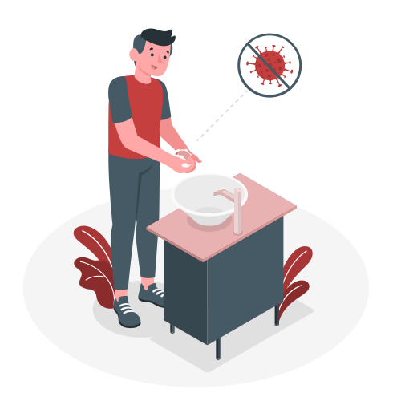

Formulários
-
-

Notificação de Evento Adverso
A notificação de eventos adversos em hospitais é crucial para aprimorar a qualidade e segurança dos cuidados de saúde. Permite identificar, analisar e prevenir incidentes prejudiciais aos pacientes, promovendo aprendizado institucional, transparência, conformidade legal e contribuindo para pesquisas na área da saúde. Essa prática visa melhorar processos clínicos, reduzir riscos e proteger a segurança dos pacientes.
-

Higiene de Mãos
A higiene das mãos é essencial para prevenir infecções em ambientes de saúde. Realizada em momentos específicos, como antes e após interações com pacientes, essa prática envolve técnicas de lavagem ou uso de soluções alcoólicas. A adesão rigorosa é crucial para reduzir infecções hospitalares, promovendo a segurança do paciente.